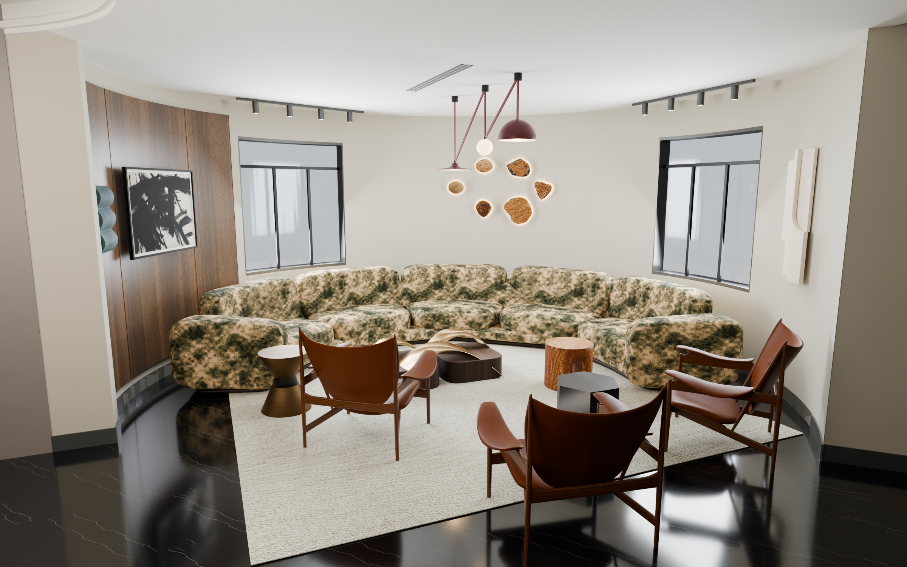
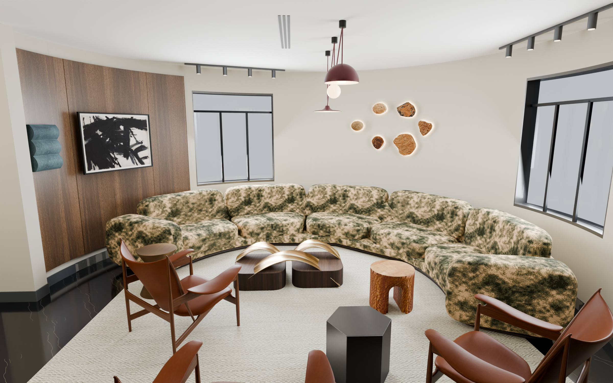
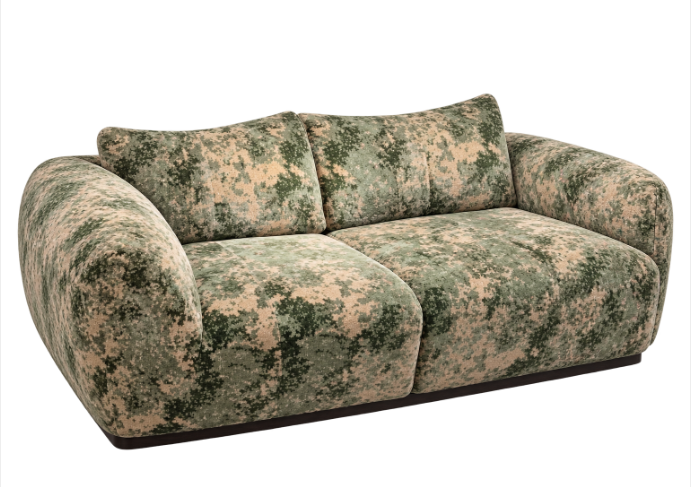
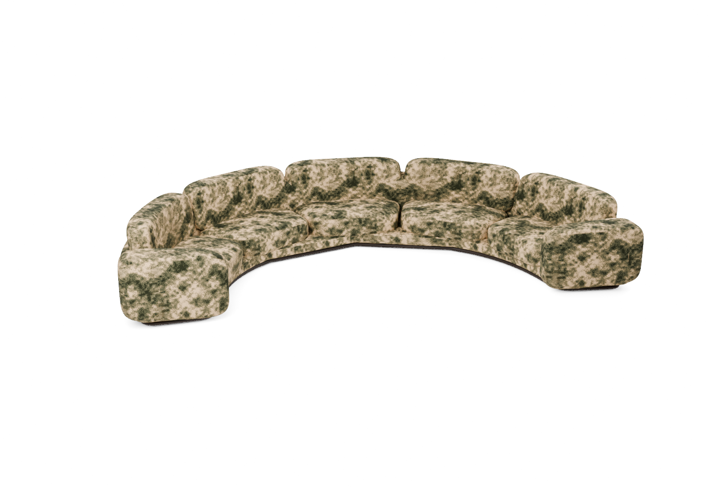
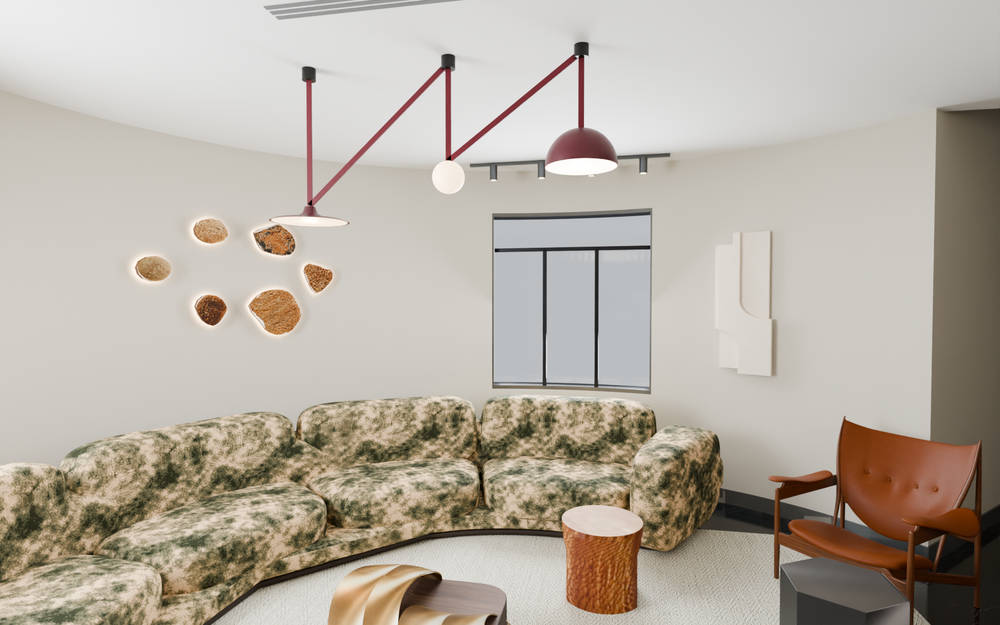
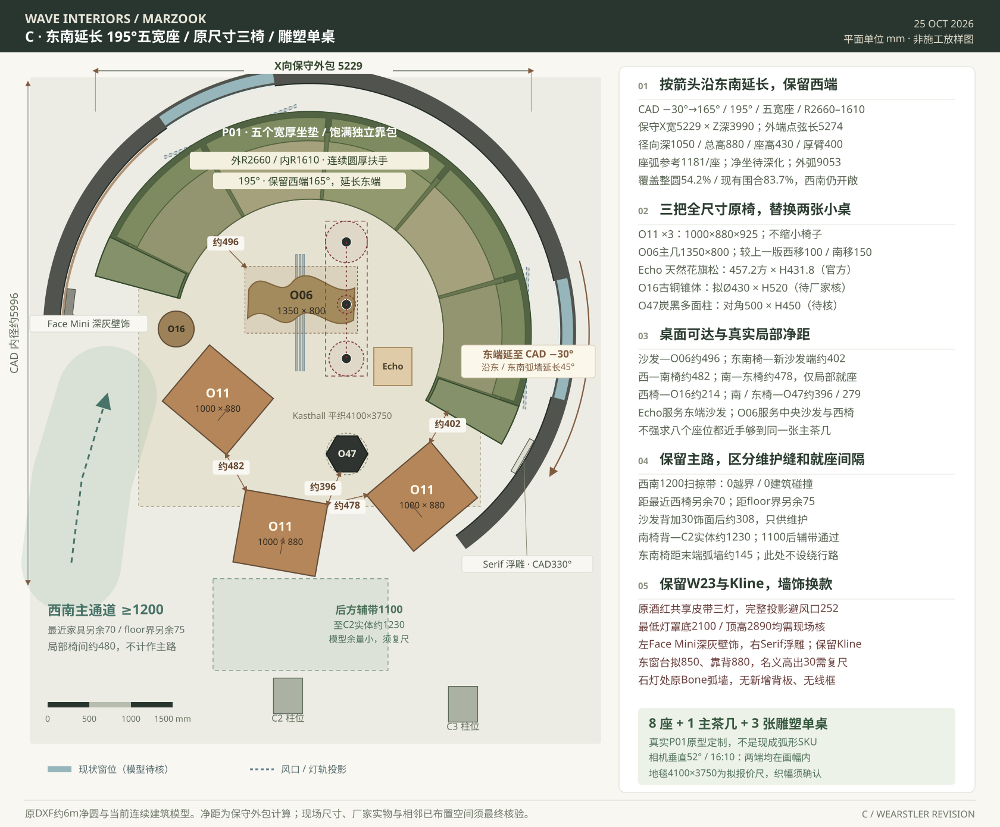
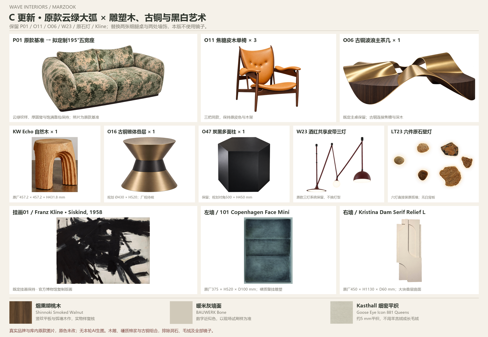

延长的大弧形
195° / 五宽座 / 外R2660 mm东端由15°延至−30°，西端165°保持。覆盖现有实体弧墙约84%；设计包络约5229×3990mm，软包圆角实际略内收。
MOSS / WARM SAND / SCULPTURAL CONTRAST
沙发右端延伸至东南弧墙，以苔绿、暖沙、焦糖、烟熏木和少量酒红贯穿相连空间；用雕塑造型与黑白关系，延续 Kelly Wearstler 的搭配逻辑。
195° / 五宽座 · 原款面料取色 · 六颗独立石头灯 · 新墙饰与单桌 · 效果图确认阶段
01 / THE FULL ROOM
西端保持原位，新增45°向右延展；保留圆厚外臂、鼓坐垫、大靠包与低暗线底座。三把同款皮木椅与主茶几重新排布。

02 / THE ORIGINAL UPHOLSTERY
直接以您这次提供的原款照片取色，校准原云纹像素，修正此前偏浅灰的材质表现。五个宽座沿真实同心弧排列，径向深1050mm；两端仍保留原款厚圆扶手。



03 / SCULPTURE, LIGHT & SHADOW
六颗原石壁灯各自背光，白色背板与外围细框全部去掉。保留已选的 Kline 黑白画，替换两处红框墙饰；两张浅石细框边几也换为有体量的雕塑单桌。

04 / A CONTINUOUS CURVE
依据客户CAD约5996mm净直径排布。圆厅延续原黑色石材地面、暖灰墙面与烟熏木；不加台阶或隔断，保持与已设计区域连通。
东端由15°延至−30°，西端165°保持。覆盖现有实体弧墙约84%；设计包络约5229×3990mm，软包圆角实际略内收。
单椅保持1000×880×925mm的全尺寸摆位；新增单桌与各座位配合，黑白、深木与铜呼应原款家具。
最终软包尺寸、布料分缝、墙饰安装与地毯织幅，由厂家按现场完成面深化。

05 / REAL PIECES, ONE PALETTE
保留云纹沙发、焦糖皮木椅、古铜波浪主几和酒红皮带三灯；以明确的黑白、几何和金属反光丰富层次。地毯继续采用细密平织，无洞石、羊羔绒、长毛绒与毛皮。

PRODUCT SOURCES & DESIGN STATUS
逐件附图片、产品链接及尺寸来源，库内家具优先。
查看新增单品资料 ↗原图取色和定制模型对照；实际布样需在现场灯光下对色。
查看原图取色对照 ↗ · 完整方案来源 ↗烟熏胡桃木、暖米灰与细铜缝，接续相邻区域的木色与古铜。
Shinnoki弧面材料 ↗ · BAUWERK Bone ↗本轮使用实物家具资料、原款像素与人工建模做物理材质渲染，没有新增AI生图。效果图供方案确认，并非施工实拍；P01弧形为原款基础上的定制设计，未拍到的结构与新软包分缝需厂家深化。既有库图的早期整理标记保留。天花2890mm及窗、柱细部沿用当前模型拟合，施工前复尺；产品颜色以原厂布样、材质样及现场照明为准。上一版与现有VR保留，待效果图确认后再改VR。